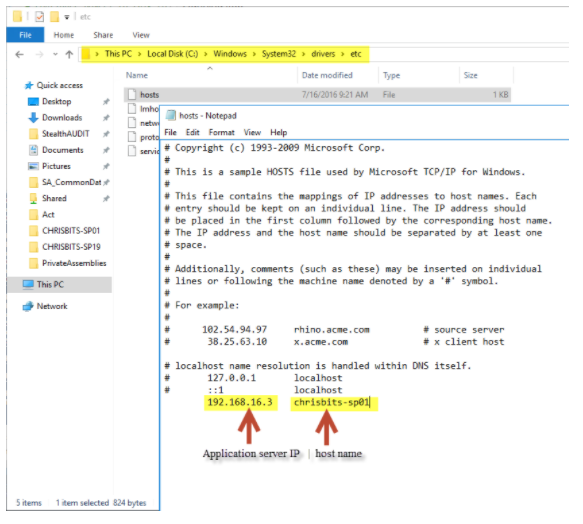

Summary: It's common for customers to use load balancers to help with performance as well as provide an additional layer of security in their networks but this can cause issues during SharePoint scans.
Issue: A load balancer does what the name implies, it balances the load of traffic on a network by spreading connections out between multiple servers which direct traffic appropriately. This can cause issues when scanning SharePoint since while we're scanning the connection can be changed from one load balancer to another. This effectively confuses our DC since the expected IP address will be different from what we originally connected to.
Instructions: There are two ways we can bypass a load balancer to ensure our connections aren't interrupted:
-
Run scans in agent mode.
- Since the agent resides on the actual SharePoint application server we can connect directly to the sites without making any web calls which would go through the load balancer.
-
Specify the site collection URL's on the static host list on the StealthAUDIT console.
-
The hosts file is located within C:\Windows\System32\drivers\etc
- Copy this file to the desktop before editing it
- Enter the individual Site Collection URL's here
- Directions for formatting this can be found here: Link
- Here we specify the URL's we intent to scan and bypass the load balancer since we already know what the URL's are instead of going through the load balancer and it telling us what those URL's are.
-
The hosts file is located within C:\Windows\System32\drivers\etc

Product:
StealthAUDIT
Module: SA
- DC - SPAA - Activity;SA - DC - SPAA - Permissions;SA - DC - SPAA - Sensitive Data
Versions:
All
Legacy Article ID:
2198